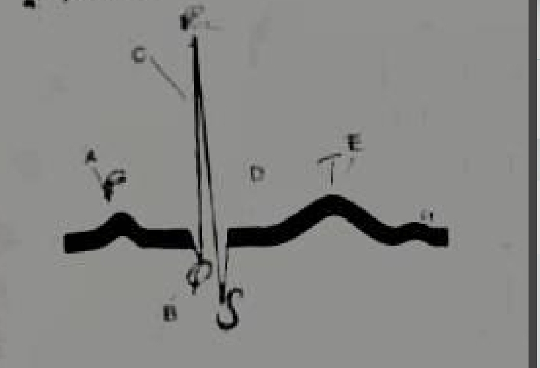

Multiple Choice Questions
50
Select the best answer for each question, then click Submit All MCQs below.
Your Score
0%
Review the feedback below each question.
Section B – Structured and Short Answer Questions
30 marks
Write your answers in the boxes below. Click Show Answer to reveal a model answer.
Question B1 – Coagulation Disorders Matching
For each blood coagulation related disorder below, select the most suitable description of a case (Use each item once) [5 marks]
| Disorder | Description |
|---|---|
| A. Consumption of many clotting factors | I. A 15-year-old child with diffuse purpura. Laboratory tests showed prolonged bleeding time. |
| B. Deficiency of factor VIII | II. A 50-year-old man who is receiving anticoagulant therapy (warfarin). He is admitted to hospital complaining of haematuria (blood in urine). |
| C. Increased fibrinogen level | III. A 10-year-old child with haemophilia A complains of persistent bleeding after tooth extraction and has prolonged coagulation time. |
| D. Deficiency of prothrombin | IV. A 30-year-old pregnant female who stopped feeling the movements of her baby for several weeks. She was admitted to hospital with bleeding tendency and examination revealed widespread clotting. |
| E. Excessive heparin administration | V. A newly born infant with bleeding tendency. Laboratory tests showed deficiency of factors II, VII, IX, X and prolonged coagulation time. |
| F. Vitamin K deficiency | |
| G. Low platelets count below 50,000/mm³ | |
| H. Deficiency of factor XI |
Model answer:
A → IV (Consumption of many clotting factors → disseminated intravascular coagulation / widespread clotting).
B → III (Factor VIII deficiency → haemophilia A with prolonged coagulation time).
C → (Increased fibrinogen level — no matching case; this is a distractor).
D → II (Prothrombin deficiency → warfarin therapy, which inhibits vitamin K‑dependent factors including prothrombin).
E → (Excessive heparin — no matching case; distractor).
F → V (Vitamin K deficiency → newborn with deficiency of factors II, VII, IX, X).
G → I (Low platelets → diffuse purpura with prolonged bleeding time).
H → (Factor XI deficiency — no matching case; distractor).
B → III (Factor VIII deficiency → haemophilia A with prolonged coagulation time).
C → (Increased fibrinogen level — no matching case; this is a distractor).
D → II (Prothrombin deficiency → warfarin therapy, which inhibits vitamin K‑dependent factors including prothrombin).
E → (Excessive heparin — no matching case; distractor).
F → V (Vitamin K deficiency → newborn with deficiency of factors II, VII, IX, X).
G → I (Low platelets → diffuse purpura with prolonged bleeding time).
H → (Factor XI deficiency — no matching case; distractor).
Question B2 – ECG Interpretation

a) Which label identifies the part of the ECG that corresponds to ventricular repolarization? [1 mark]
Label E (T wave).
b) Which of the labels identifies the Q wave? [1 mark]
Label B (the initial negative deflection of the QRS complex).
c) Which label identifies the part of the ECG that corresponds to maximum opening of ventricular Na channels? [1 mark]
Label C (R wave — phase 0 rapid depolarization, when voltage‑gated Na⁺ channels open maximally).
d) Which label identifies the part of the ECG that corresponds to maximum opening of ventricular Ca channels? [1 mark]
Label D (ST segment — plateau phase, when L‑type Ca²⁺ channels are open).
e) Which label identifies the part of the ECG that corresponds to the plateau phase of ventricular muscle action potential [1 mark]
Label D (ST segment).
Section C – Clinical Scenarios
3 scenarios
Read each scenario carefully and answer the questions. Click Show Answer for model answers.
Scenario 1 – Neuromuscular Junction (Wendy)
Wendy, a 23-year-old photographer, visits her physician after experiencing strange symptoms for the last 8 months. She had severe eyestrain when she read for longer than 15 minutes. She became tired when she chewed her food, brushed her teeth, or dried her hair. She was evaluated by her physician. While awaiting the results, the physician initiated a trial of pyridostigmine, an acetylcholinesterase inhibitor. Wendy immediately felt better while taking the drug; her strength returned to almost normal.
a) What is the most likely neuromuscular condition that Wendy is suffering from? [2 marks]
Myasthenia gravis.
b) With respect to neuromuscular transmission, what is a quantum? [2 marks]
A quantum is the amount of acetylcholine released from a single synaptic vesicle. Each quantum produces a miniature end‑plate potential (MEPP) of about 0.5–1 mV.
c) Why is the neuromuscular junction said to have a high safety margin? [2 marks]
Because the amount of ACh released normally far exceeds the minimum needed to depolarize the muscle fibre to threshold. Many more receptors are activated than necessary, so transmission succeeds even if some receptors are blocked or ACh release is reduced.
d) State the range of the synaptic delay [1 mark]
0.5–0.7 milliseconds (approximately 0.5 ms).
e) Mention two factors that account for the delay in (d) [2 marks]
1. Time taken for Ca²⁺ influx and neurotransmitter release.
2. Diffusion time of ACh across the synaptic cleft.
3. Time for ACh binding and receptor activation.
2. Diffusion time of ACh across the synaptic cleft.
3. Time for ACh binding and receptor activation.
f) What is responsible for the non-quantal release of acetylcholine at the nerve terminal? [1 mark]
Leakage of ACh from the cytoplasm through the presynaptic membrane, independent of vesicular release.
g) Mention the cholinergic receptor type located on the postsynaptic membrane of the synaptic cleft [1 mark]
Nicotinic acetylcholine receptor (nAChR).
h) The interaction of acetylcholine with its receptor is blocked reversibly by ________ and almost irreversibly by ________. [1 mark]
Reversibly by curare (or vecuronium); almost irreversibly by α‑bungarotoxin (or snake venom).
i) What destroys the acetylcholine that diffuses away from the endplate into the blood stream and other tissues? [1 mark]
Butyrylcholinesterase (pseudocholinesterase) in plasma and tissues.
j) Apart from the inhibitor stated in the question state another class of chemicals that block the hydrolysis of acetylcholine [1 mark]
Organophosphates (e.g., insecticides, nerve agents) — irreversible acetylcholinesterase inhibitors.
k) What is the implication of the blockage in (i) above? [1 mark]
Blocking acetylcholinesterase increases ACh concentration in the synaptic cleft, improving neuromuscular transmission in myasthenia gravis.
l) What is most likely to be seen in a biopsy sample of intercostal muscles of the patient in this question? [2 marks]
Type II fibre atrophy (or generalised muscle atrophy) due to decreased neuromuscular transmission and disuse.
Scenario 2 – Deep Venous Thrombosis
A male patient aged 70 years, suffered from fracture neck femur of the left side. He was operated for the fracture. After the operation, he was unable to move even in bed although he was encouraged to move. Three days after the operation, the doctor observed swelling in his left leg and was diagnosed as deep venous thrombosis.
a) Mention two causes of occurrence of deep venous thrombosis in this patient [2 marks]
1. Venous stasis (immobility after surgery).
2. Endothelial injury (surgical trauma).
3. Hypercoagulability (post‑operative state, increased clotting factors).
2. Endothelial injury (surgical trauma).
3. Hypercoagulability (post‑operative state, increased clotting factors).
b) The patient received heparin three times daily and dicumarol once daily. What is the mode of action of dicumarol? [2 marks]
Dicumarol (warfarin) inhibits vitamin K epoxide reductase, preventing the regeneration of reduced vitamin K. This reduces the synthesis of vitamin K‑dependent clotting factors: II, VII, IX, X, and proteins C and S.
c) How is heparin administered? [1 mark]
Heparin is administered intravenously (IV) or subcutaneously. It is not effective orally.
d) After two days, heparin treatment was stopped and dicumarol treatment continues. The efficacy of dicumarol treatment can be adjusted by testing which haemostatic function? [1 mark]
Prothrombin time (PT) / INR.
e) Ten days later, the patient suffers from severe bleeding from a slight cut in the face. The clotting of blood does not occur. This was diagnosed as a complication of dicumarol therapy. What substance can be given to the patient in this case? [1 mark]
Vitamin K (phytomenadione) or fresh frozen plasma (FFP) if urgent.
f) Give one reason each for the prolonged bleeding time in the following conditions (1) Vitamin C deficiency (2) Deficiency of von Willebrand factor (3) Prolonged use of aspirin (4) Purpura
1. Vitamin C deficiency – defective collagen synthesis → capillary fragility.
2. Deficiency of von Willebrand factor – impaired platelet adhesion to subendothelium.
3. Prolonged use of aspirin – inhibits cyclooxygenase → decreased thromboxane A2 → impaired platelet aggregation.
4. Purpura – decreased platelet number or function.
2. Deficiency of von Willebrand factor – impaired platelet adhesion to subendothelium.
3. Prolonged use of aspirin – inhibits cyclooxygenase → decreased thromboxane A2 → impaired platelet aggregation.
4. Purpura – decreased platelet number or function.